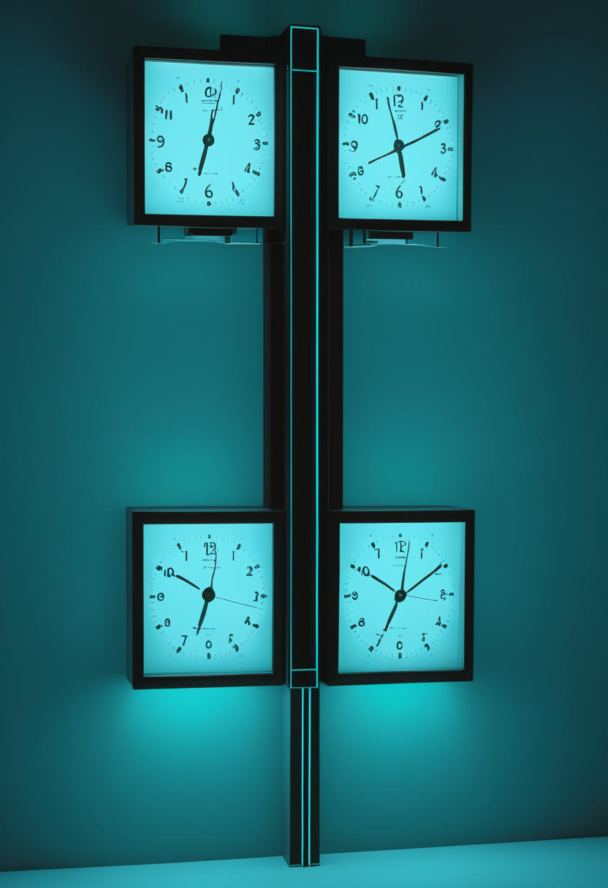
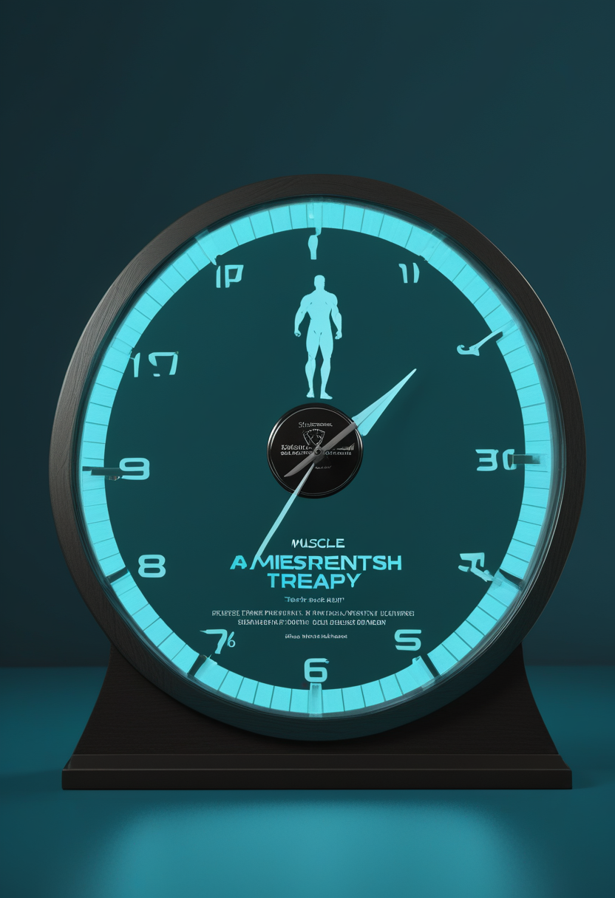
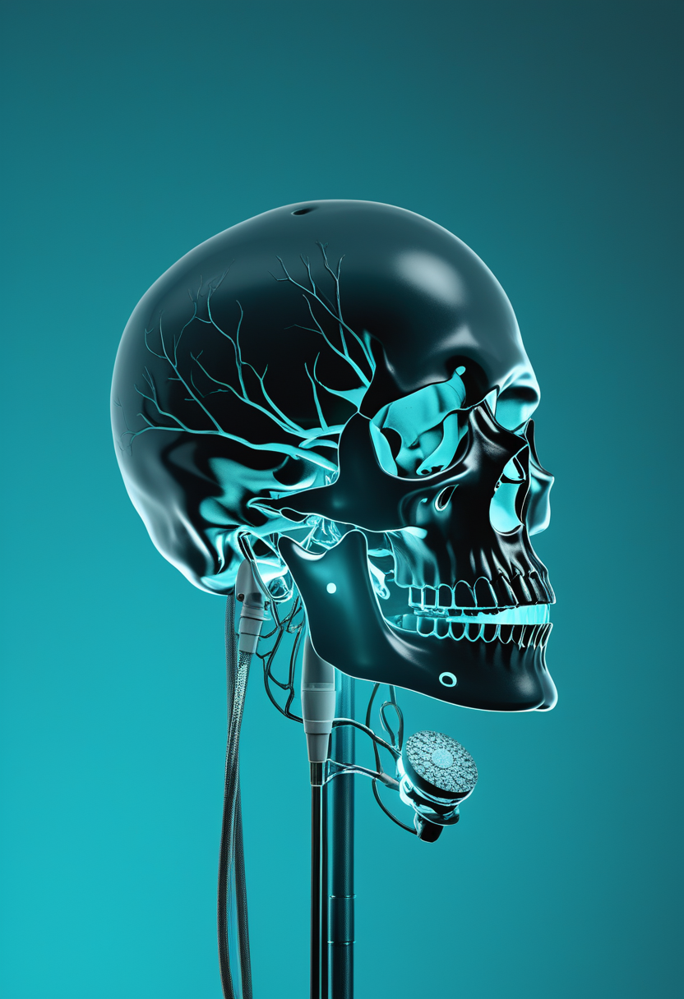
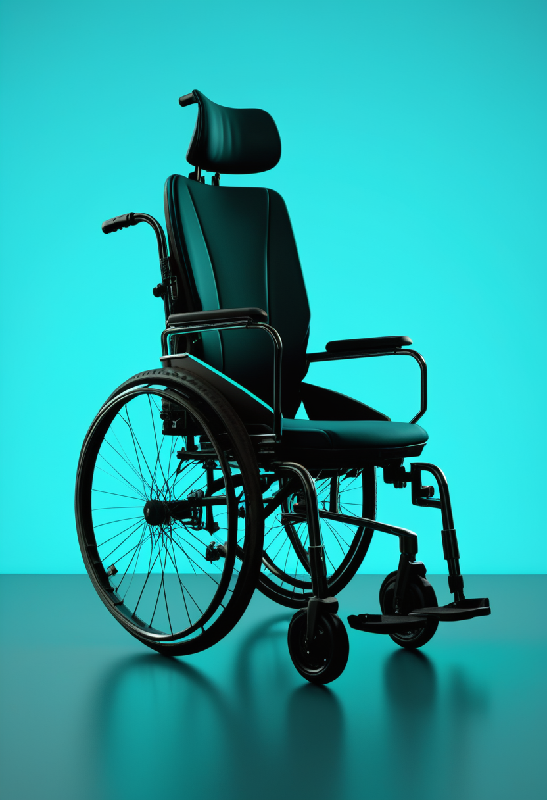
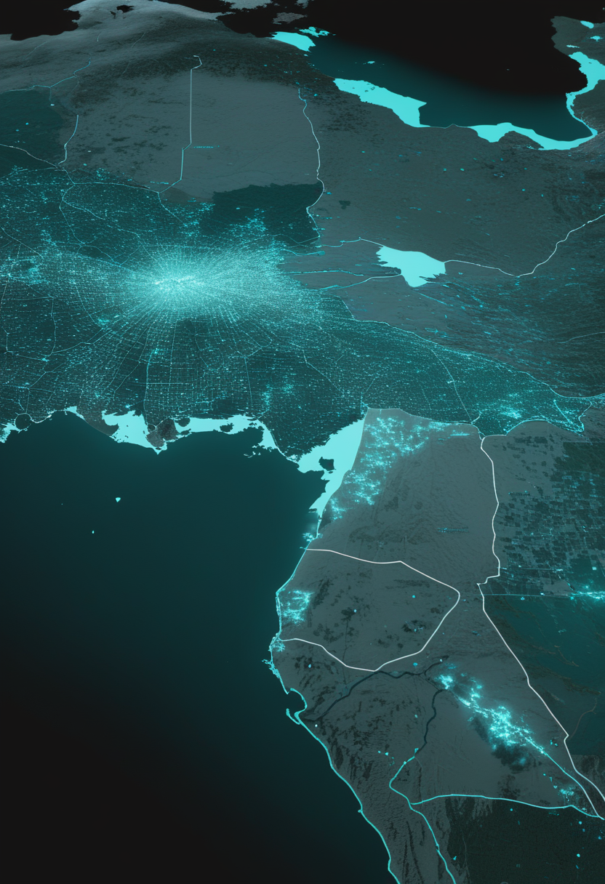
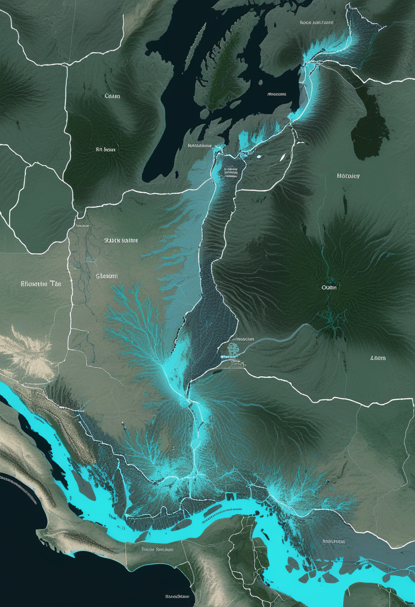
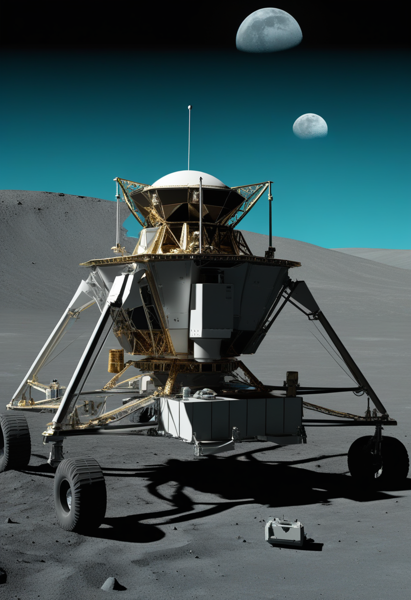

日曜日の便り。WHOアフリカ地域事務局の週次報告第14号(8月16日時点)が、この流行の輪郭をこれまでで最もはっきりと描き出した。コンゴ民主共和国5,021例・2,378人死亡、ウガンダ20例・2人死亡、致死率は47%。ウガンダは6月21日以降新規例がなく、7月28日に終息を宣言した一方、コンゴでは新たにバス・ウエレ州に感染が及び、影響は6州55保健区に拡大している。国境をまたぐ脅威は薄れ、いま問われているのはコンゴ国内の封じ込め能力そのものだ。命の章では、Cure SMAの報告書が診断時年齢の中央値を2017年の1.2歳から7日へ縮めたことを伝え、アピテグロマブの第3相データがLancet Neurologyに掲載されFDA判断まで38日となった。自由の章では、ALS患者が自宅で3,800時間・183,000文を独立使用したBCIの実証と、Synchronの低侵襲デバイスが12カ月の安全性を証明したことが並んだ。基盤の章では、米国の麻疹が1週間で211例増え2,777例に達し、西・中央アフリカのコレラが二つの川筋を伝って6カ国に広がっている実態が見えた。畏敬の章では、嫦娥7号が明日24日に打ち上げへ最終準備を整え、JWSTが謎めいた『小さな赤い点』の正体候補となる新種の天体を報告した。そして美の章では、UNESCOの神経技術倫理勧告と、AIの『福祉』を実験にかける試みが、答えの出る前に枠組みを作るという同じ姿勢を共有していた ― 封じ込めへ向かう危機と、遠い宇宙・脳への問いが、同じ日曜日の朝に並走した。

8/22号の続報 ― WHOアフリカ地域事務局の週次報告第14号(データは8月16日まで)が、この流行の輪郭をこれまでで最もはっきりと描き出した。コンゴ民主共和国5,021例・2,378人死亡、ウガンダ20例・2人死亡。合計5,041例・2,380人で、致死率は47%にのぼる。ウガンダは6月21日以降に新規例がなく、7月28日に終息を宣言した。一方コンゴでは新たにバス・ウエレ州で確定例が出て、影響は6州・151保健区のうち55区に及ぶ。国境をまたぐ脅威としての性格は薄れ、いま問われているのはコンゴ国内の封じ込め能力そのものである。
8月はSMA啓発月間である。Cure SMAがまとめた数字は、この10年の変化を端的に示す。SMAによる死亡率はおよそ60%低下した。診断時年齢の中央値は、2017年の1.2歳から現在は7日へ短縮している ― 症状が出てから探すのではなく、生まれた直後に見つける医療に変わったということだ。牽引したのは新生児スクリーニングの拡大で、2024年に米国全50州に行き渡った。米国でSMAとともに暮らす人と家族は9,000人を超える。もっとも同団体は、進歩と並んで残る格差 ― 保険給付の壁や成人患者の精神的負担 ― も同時に指摘している。

筋肉側に働きかけるアピテグロマブの第3相SAPPHIRE試験の主要データが、Lancet Neurologyに掲載された。SMN標的治療を受けている2歳から21歳の188人を対象に、52週後のHFMSE(ハマースミス機能運動尺度・拡張版)でプラセボに対し統計学的に有意な改善を示している。臨床的に意味があるとされる3点以上の改善に達した割合は、実薬群で約30%、プラセボ群で約13%。新たな安全性上の懸念は報告されていない。同薬は昨年、製造上の問題で一度承認を見送られており、体制を整えたうえでの再申請である。処方薬ユーザーフィー法に基づく判断期限は9月30日 ― 本日から数えて38日後にあたる。
遺伝子治療を受けた子どもが、その後どこまで伸びるか。この問いに、別の角度から答えようとしているのがサラナーセンである。MDA 2026で報告された臨床試験データによれば、遺伝子治療を先に受けた小児において、この薬は安全に使え、運動機能の改善をもたらした。仕組みはアンチセンスオリゴヌクレオチド(ASO)で、SMN2遺伝子から転写されたmRNAに結合し、完全長で機能するSMNタンパク質の産生を増やす。遺伝子治療で止まった時計を、もう一度動かせるかが問われている。
診断が生後7日になったことで、SMA医療の問いは完全に前倒しされた。いま議論されているのは『発症後どう治すか』ではなく、『発症する前に、どの薬を、どの順で重ねるか』である。9月30日のFDA判断は、その組み合わせに筋肉側の選択肢が一つ加わるかどうかを決める。
BCIの実力を測る指標は、これまで精度と速度だった。だが本当の関門は別のところにあった ― 研究者が横にいない自宅で、毎日、壊れずに動くか。UC Davisのチームが率いるBrainGate2試験の参加者、筋萎縮性側索硬化症(ALS)のCasey Harrellさん(47)は、2023年に左中心前回へ埋め込んだ装置を、およそ2年で3,800時間以上、自宅で独立して使い続けた。その間に発した文は183,000を超え、単語数は約200万に達する。発話デコーダーとカーソル制御を同じ装置で兼ねる構成で、Nature Medicineに報告された。実験室の記録ではなく、生活の記録である。

血管の内側から脳の信号を拾うSynchronのStentrodeについて、COMMAND早期実現可能性試験の12カ月成績が報告された。6人全員が主要評価項目 ― 埋め込み後1年間、死亡や恒久的な障害増悪といった機器関連の重篤有害事象が起きないこと ― を満たし、神経学的な安全性上の事象も報告されていない。電極はわずか16個で、開頭を伴わない点が最大の特徴だ。同社は2025年11月に2億ドルのシリーズDを完了し、長期的な有用性を見るINTENT試験を開始、2026年には主要試験(pivotal trial)に進む構えである。埋込み型BCIとして米国初の市販前承認(PMA)を申請するために越えねばならない関門にあたる。

Neuralinkは、麻痺のある試験参加者が脳信号だけで電動車椅子を操作する様子を公開した。仕組みは意外なほど素直で、運動皮質に置いたN1インプラントが生む「カーソル」の変位を、そのまま進行方向と加速度に読み替える。上で前進、下で後退、左右で操舵。座面と背もたれの角度調整もできる。画面の中のポインタを動かす技術が、そのまま現実空間の移動に接続された格好だ。本装置は依然として治験機器であり、FDAや各国規制当局の市販承認は受けていない。
三つの話は同じ問いの別の答えだ。『使えるBCIとは何か』。UC Davisは持続時間で、Synchronは安全性の証明で、Neuralinkは用途の拡張で答えている。この分野の勝負どころは、信号処理の精度から、日常に耐える設計と規制の通り方へ移りつつある。

WHOアフリカ地域事務局の週次報告第14号(8月16日時点)が、この流行の輪郭をこれまでで最もはっきりと描き出した。コンゴ民主共和国5,021例・2,378人死亡、ウガンダ20例・2人死亡、合計5,041例・2,380人、致死率は47%。ウガンダは6月21日以降新規例がなく、7月28日に終息を宣言した。一方コンゴでは新たにバス・ウエレ州で確定例が出て、影響は6州・151保健区のうち55区に及ぶ。国境をまたぐ脅威としての性格は薄れ、いま問われているのはコンゴ国内の封じ込め能力そのものである。なおECDCの日次集計(8月19日まで)はコンゴ5,290例・2,516人で、週報との差269例・138人は3日ぶんの増加にあたる。
米CDCの8月20日時点の集計で、2026年の確定麻疹は2,777例。8月13日時点の2,566例から、1週間で211例増えた。確定例の94%(2,777例中2,614例)が集団発生に関連する。震源の一つがペンシルベニア州で、直近7日間だけで89例が加わり、州別ではユタ、サウスカロライナに次ぐ全米3位。ワクチン接種率が州内でも低いランカスター郡が今年2度の流行の中心にあり、同郡だけで181例を数える。国内の検証結果を受けて、汎米保健機構(PAHO)の地域検証委員会が11月に『排除状態』を維持できるかを判定する。

西・中央アフリカのコレラは、コンゴ民主共和国、コンゴ共和国、ナイジェリア、チャド、カメルーン、中央アフリカ共和国の6カ国で加速している。最大はナイジェリアで、1月1日以降5万例超・338人死亡。コンゴ民主共和国も3万400例超・死者約700人にのぼる。注目すべきは広がり方で、感染は二つの流域に沿って走っている。チャド・カメルーン・ナイジェリアを結ぶチャド湖流域では同一のVibrio cholerae O1小川型が確認され、コンゴ川流域がコンゴ民主共和国・コンゴ共和国・中央アフリカ共和国の流行をつないでいる。季節の雨、洪水、人の移動が背中を押す。
エボラは『拡大の速度』から『封じ込めの深さ』へ論点が移った。追跡率82.2%は悪くない数字だが、致死率47%はこのウイルスに有効な特異的治療がまだないことの裏返しでもある。麻疹とコレラに共通するのは、どちらも防ぐ手段が確立している病気だという点だ。技術ではなく到達が足りていない。

中国の嫦娥7号が、8月24日00:00 UTC(日本時間同日9:00、北京時間8:00)に、海南島・文昌の発射区LC-101から長征5号で打ち上がる。米国時間では23日日曜の夜にあたるため、現地報道が『日曜の打ち上げ』と呼ぶこともある。構成は周回機、着陸機、着陸機から降ろす探査車、そして水分子と水素同位体の分析装置を積んだ小型ホッパー(跳躍機)の四つ。国際搭載6件を含む21の科学ペイロードを運ぶ。着陸目標は月南極シャクルトンクレーターの縁付近だ。月周回軌道への到達まで最大6日、その後およそ2カ月の準備を経て、11月の着陸を目指す。狙いは水氷の探査と、将来の月面研究基地の候補地評価である。
核融合ではなく、ブラックホールへの落下エネルギーで輝く星のようなもの。そんな新種の天体がNature(8月12日付)で報告された。名はMoM-BH*-1、赤方偏移7.7569 ― 宇宙が誕生からおよそ6億6,000万年のころの光である。スペクトルを説明するのに最も適した描像は、太陽の約10万倍の質量を持つ降着中のブラックホールを、太陽系ほどの大きさの濃い水素の殻が包んでいる、というものだった。その明るさは既知のどの星の1,000億倍とも表現される。意義は正体の珍しさだけではない。JWSTが初期宇宙で数百個も見つけながら説明がつかずにいた『小さな赤い点』は、この天体のスペクトルに若い母銀河の光を重ねると再現できるという。長く続いた謎に、一つの筋道が通った。
NASA、ローマン宇宙望遠鏡チーム、SpaceXの各責任者が8月21日、ケネディ宇宙センターで飛行準備審査(FRR)を実施し、最終準備段階へ進むことを承認した。打ち上げは8月30日午前7時26分(米東部夏時間)、LC-39Aからファルコン・ヘビーで。当初計画より8カ月早い。軌道上ではもう一つの予定がある ― 8月25日、NASAのAnil MenonとESAのSophie Adenotが船外活動に出て、地上通信アンテナの交換を仕上げる。Adenotはこれで船外活動を行った初のフランス人女性となる。時間が余れば、ハーモニー・モジュール前方ポートのレトロリフレクター交換にも取りかかる予定だ。
観測の前線が宇宙へ移る一方、素粒子物理は逆に静けさへ向かっている。大型ハドロン衝突型加速器(LHC)は6月27日に第3期運転(Run 3)最後の陽子を回し、長期停止3(Long Shutdown 3)に入った。ビームが戻るのは2030年、高輝度LHC(HL-LHC)としてで、CERNは従来比でおよそ1桁多いデータ量を見込む。宇宙の縁を覗く望遠鏡が次々に上がる数年間、地上の加速器は静かに姿を変えている。
嫦娥7号は明日、月南極を目指して飛ぶ。JWSTが追い続けてきた謎の光は、ブラックホールを包む水素の殻だったかもしれない。ローマン宇宙望遠鏡は最終審査を終え、老朽アンテナの修理と並んで軌道の日常を紡ぐ。そして地上では、LHCが2030年の再起動に向けて静かに眠りにつく ― 畏敬の対象は、遠い宇宙だけでなく、それを見るための地道な準備そのものにもある。
UNESCO総会は2025年11月12日、神経技術の倫理に関する勧告を採択した。神経技術について世界共通の枠組みを定めた初の文書で、神経データはとりわけ機微性が高いとして厳格な保護を求め、使うか否かを本人が随時選べること、同意は自由かつ十分な情報のもとで与えられることを原則に据えている。ただし法的拘束力はない。スタンフォード大学ロースクールの論考(3月30日)は、この勧告が残した難問を突く ― 『デジタル化された思考』を守るのに、所有権という既存の法概念は本当に使えるのか。データを『持ち物』とみなす発想は、思考にはうまく当てはまらない。チリやカナダが進めるニューロライツ立法も、同じ壁の前に立っている。
デジタルツイン脳の使い道が、観察から介入へ広がりつつある。3月6日付のbioRxiv投稿(査読前)は、個人の脳解剖と課題遂行中の脳活動を神経細胞スケールの枠組みに統合した、介入可能なヒト脳デジタルツインを報告した。計算機の中でシナプス伝導度を上げ下げすると、ネットワークは双方向に応答する。さらに集団規模のシミュレーションによって、症状の長期的な推移を予測できたという。査読前の段階であり、結果の解釈には留保が要る。
8月14日から16日にかけて、サンフランシスコとベルリン、およびオンラインでDigital Minds Research Sprintが開かれた。参加者が取り組んだのは、最先端AIモデルの選好、福祉に関わる信号、内省の能力、同一性を実際に測る実験を設計し、走らせることである。AI福祉、デジタル感覚、解釈可能性、アラインメント、心の哲学が交差する場だ。前号で紹介した『動物福祉の5つの自由をAIに翻案する』倫理枠組みが規範の側からの試みだったのに対し、今回は測定の側から同じ問いに近づいている。意識の有無に決着がつく前に、扱いの作法を組み立てておこうという姿勢は共通する。
この領域はいま、三つの層が同時に動いている。国際規範(UNESCO)、計算モデル(デジタルツイン)、そして測定手法(AI福祉の実験)。共通するのは『答えが出る前に枠組みを作る』という順序だ。技術が先行し規範が追いかける従来の型とは、逆になっている。
WHOアフリカ地域事務局の週次報告第14号(8月16日時点)が、コンゴ民主共和国5,021例・2,378人死亡、ウガンダ20例・2人死亡、致死率47%という数字を示した。ウガンダは7月28日に終息を宣言し、国境をまたぐ脅威としての性格は薄れた一方、コンゴでは新たにバス・ウエレ州へ拡大し6州55保健区に影響が及ぶ。命の章では、Cure SMAの報告書が診断時年齢の中央値を2017年の1.2歳から7日へ縮めたことを伝え、アピテグロマブの第3相SAPPHIRE試験がLancet Neurologyに掲載されFDA判断まで38日となり、サラナーセンが遺伝子治療のあとを引き継ぐ姿を見せた。自由の章では、ALS患者が自宅で3,800時間・183,000文を独立使用したBCIの実証、Synchronの低侵襲デバイスが12カ月の安全性を証明したこと、Neuralinkの思考による車椅子操作が並んだ。基盤の章では、米国の麻疹が1週間で211例増え2,777例に達し、西・中央アフリカのコレラが二つの川筋を伝って6カ国に広がっている実態が見えた。畏敬の章では、嫦娥7号が明日24日に月南極を目指して打ち上がる準備を整え、JWSTが追い続けてきた謎の『小さな赤い点』の正体候補となる新種の天体『ブラックホール星』が報告され、ローマン宇宙望遠鏡は最終審査を通過した。そして美の章では、UNESCOの神経技術倫理勧告と、AIの『福祉』を実験にかける試みが、答えの出る前に枠組みを作るという同じ姿勢を共有していた ― 封じ込めへ向かう危機と、遠い宇宙・脳への問いが、同じ日曜日の朝に並走した。
では、また明日の朝に。 — JaH